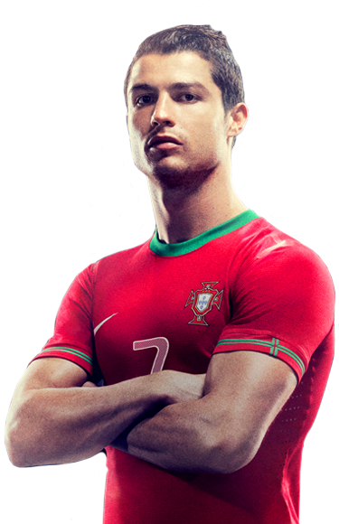
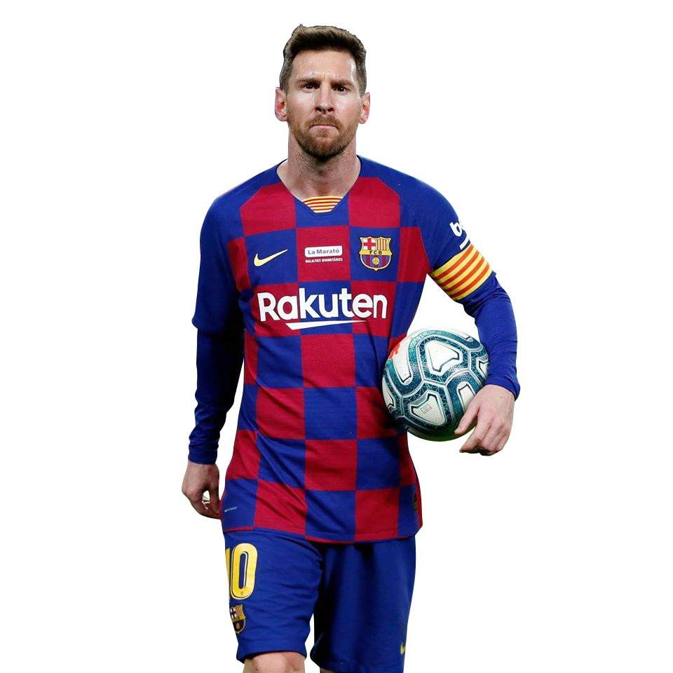

Conoce más de ellos:
Cristiano Ronaldo
Cristiano Ronaldo o CR7, es un futbolista portugués que juega como delantero en el Manchester United Football Club de la Premier League de Inglaterra y en la selección de Portugal, de la cual es su capitán y máximo goleador histórico.
Messi
Leo Messi, es un futbolista argentino que juega como delantero o centrocampista. Jugador histórico del Fútbol Club Barcelona, al que estuvo ligado veinte años, desde 2021 integra el plantel del Paris Saint-Germain de la Ligue 1 de Francia. Es también internacional con la selección de Argentina, equipo del que es capitán y máximo goleador histórico.
Neymar
Neymar Júnior o simplemente Neymar, es un futbolista brasileño que juega como delantero en el Paris Saint-Germain F. C. de la Ligue 1 de Francia, y en la selección de fútbol de Brasil.
Neymar surgió de las categorías juveniles del Santos, donde hizo su debut profesional a los 17 años. Considerado uno de los juveniles más prometedores del mundo,

Robert Lewandowski
Es un futbolista polaco que juega como delantero en el Bayern de Múnich de la Bundesliga de Alemania desde la temporada 2014-15. Es también internacional absoluto con la selección de Polonia desde 2008, de la cual es su capitán y máximo goleador histórico.
Considerado como uno de los mejores delanteros del mundo,